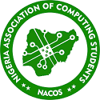
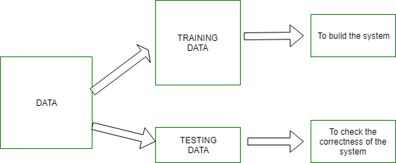

KWARA STATE UNIVERSITY
DEPARTMENT: COMPUTER SCIENCE
FULL NAME: HAMMED Razaq Olansile
MATRIC NUMBER: 20D/47CS/01223
PROJECT SUPERVISOR: Dr Mrs Babatunde

DEPARTMENT: COMPUTER SCIENCE
FULL NAME: HAMMED Razaq Olansile
MATRIC NUMBER: 20D/47CS/01223
PROJECT SUPERVISOR: Dr Mrs Babatunde
Artificial intelligence is the simulation of human intelligence processes by machines, especially computer systems.
Specific applications of AI include expert systems, natural language processing, speech recognition and machine vision. AI systems work by ingesting large amounts of labeled training data, analyzing the data for correlations and patterns, and using these patterns to make predictions about future states. In this way, a chatbot that is fed examples of text chats can learn to produce lifelike exchanges with people, or an image recognition tool can learn to identify and describe objects in images by reviewing millions of examples.
AI programming focuses on three cognitive skills: learning, reasoning and self-correction.
Learning processes: Learning processes: This aspect of AI programming focuses on acquiring data and creating rules for how to turn the data into actionable information. The rules, which are called algorithms, provide computing devices with step-by-step instructions for how to complete a specific task.
Reasoning processes: This aspect of AI programming focuses on choosing the right algorithm to reach a desired outcome.
Self-correction processes: This aspect of AI programming is designed to continually fine-tune algorithms and ensure they provide the most accurate results possible.
AI is important because it can give enterprises insights into their operations that they may not have been aware of previously and because, in some cases, AI can perform tasks better than humans. Particularly when it comes to repetitive, detail-oriented tasks like analyzing large numbers of legal documents to ensure relevant fields are filled in properly, AI tools often complete jobs quickly and with relatively few errors.
This has helped fuel an explosion in efficiency and opened the door to entirely new business opportunities for some larger enterprises. Prior to the current wave of AI, it would have been hard to imagine using computer software to connect riders to taxis, but today Uber has become one of the largest companies in the world by doing just that. It utilizes sophisticated machine learning algorithms to predict when people are likely to need rides in certain areas, which helps proactively get drivers on the road before they're needed. As another example, Google has become one of the largest players for a range of online services by using machine learning to understand how people use their services and then improving them
Strong AI vs. weak AI
AI can be categorized as either weak or strong. Weak AI, also known as narrow AI, is an AI system that is designed and trained to complete a specific task. Industrial robots and virtual personal assistants, such as Apple's Siri, use weak AI.
Strong AI, also known as artificial general intelligence (AGI), describes programming that can replicate the cognitive abilities of the human brain. When presented with an unfamiliar task, a strong AI system can use fuzzy logic to apply knowledge from one domain to another and find a solution autonomously.


Artificial intelligence has made its way into a wide variety of markets. Here are some examples
AI in healthcare: The biggest bets are on improving patient outcomes and reducing costs. Companies are applying machine learning to make better and faster diagnoses than humans. One of the best-known healthcare technologies is IBM Watson. It understands natural language and can respond to questions asked of it. The system mines patient data and other available data sources to form a hypothesis, which it then presents with a confidence scoring schema. Other AI applications include using online virtual health assistants and chatbots to help patients and healthcare customers find medical information, schedule appointments, understand the billing process and complete other administrative processes. An array of AI technologies is also being used to predict, fight and understand pandemics such as COVID-19.
AI in business: Machine learning algorithms are being integrated into analytics and customer relationship management (CRM) platforms to uncover information on how to better serve customers. Chatbots have been incorporated into websites to provide immediate service to customers. Automation of job positions has also become a talking point among academics and IT analysts.
AI in education: AI can automate grading, giving educators more time. It can assess students and adapt to their needs, helping them work at their own pace. AI tutors can provide additional support to students, ensuring they stay on track. And it could change where and how students learn, perhaps even replacing some teachers.
AI in finance: AI in personal finance applications, such as Intuit Mint or TurboTax, is disrupting financial institutions. Applications such as these collect personal data and provide financial advice. Other programs, such as IBM Watson, have been applied to the process of buying a home. Today, artificial intelligence software performs much of the trading on Wall Street.
AI in manufacturing:Manufacturing has been at the forefront of incorporating robots into the workflow. For example, the industrial robots that were at one time programmed to perform single tasks and separated from human workers, increasingly function as cobots: Smaller, multitasking robots that collaborate with humans and take on responsibility for more parts of the job in warehouses, factory floors and other workspaces.
AI in banking:Banks are successfully employing chatbots to make their customers aware of services and offerings and to handle transactions that don't require human intervention. AI virtual assistants are being used to improve and cut the costs of compliance with banking regulations. Banking organizations are also using AI to improve their decision-making for loans, and to set credit limits and identify investment opportunities.
AI in transportation:In addition to AI's fundamental role in operating autonomous vehicles, AI technologies are used in transportation to manage traffic, predict flight delays, and make ocean shipping safer and more efficient.
Pattern recognition is the ability of machines to identify patterns in data, and then use those patterns to make decisions or predictions. Pattern recognition is defined as the study of how machines can observe the environment, learn to distinguish various patterns of interest from their background, and make logical decisions about the categories of the patterns.
Pattern recognition is the use of machine learning algorithms to identify patterns. It classifies data based on statistical information or knowledge gained from patterns and their representation.
The goal of pattern recognition is based on the idea that the decision-making process of a human being is somewhat related to the recognition of patterns. For example, the next move in a chess game is based on the board's current pattern, and buying or selling stocks is decided by a complex pattern of financial information. Therefore, the goal of pattern recognition is to clarify these complicated mechanisms of decision-making processes and to automate these e functions using computers.
The training set contains images or data used for training or building the model. Training rules are used to provide the criteria for output decisions. Training algorithms are used to match a given input data with a corresponding output decision. The algorithms and rules are then applied to facilitate training. The system uses the information collected from the data to generate results. The testing set is used to validate the accuracy of the system. The testing data is used to check whether the accurate output is attained after the system has been trained. This data represents approximately 20% of the entire data in the pattern recognition system. The pattern recognition process works in five main phases as shown in the image below:
1. Sensing: In this phase, the pattern recognition system converts the input data into analogous data.
2. Segmentation: This phase ensures that the sensed objects are isolated.
3. Feature extraction: This phase computes the features or properties of the objects and sends them for further classification.
4. Classification: In this phase, the sensed objects are categorized or placed in groups or cases.
5. Post-processing: Here, further considerations are made before a decision is made.
There are various sequences of activities that are used for designing the Pattern Recognition Systems. These activities are as follows:
1. Data Collection
2. Feature Choice
3. Model Choice
4. Training
5. Evaluation
Pattern recognition can be applied in the following areas:
Image analysis: Pattern recognition is used in digital image analysis to automatically study images to gather meaningful information from them. It gives machines the recognition intelligence needed for image processing.
Seismic analysis: Seismic analysis involves studying how natural events like earthquakes affect rocks, buildings, and soils. Pattern recognition is used for discovering and interpreting patterns in seismic events.
Healthcare: Pattern recognition is used in the healthcare sector to improve health services. Data of patients is stored and used by medical practitioners for further analysis. This technique is also used to recognize objects or damages in human bodies.
Fingerprint identification: This process is used for identifying fingerprints in computer and smartphone devices. Modern smartphones have a fingerprint identification feature that allows you to gain access to your phone after verifying your fingerprint.
Computer vision: It is used in computer applications to extract useful features from image samples. It has been applied in computer vision to perform various tasks such as object recognition and medical imaging.
Pattern recognition methods provide various benefits, depending on the application. In general, finding patterns in data helps to analyze and predict future trends or develop early warning systems based on specific pattern indicators. Further advantages include:
Identification: Detected patterns help to identify objects at different angles and distances (for example, in video-based deep learning) or identify hazardous events. Pattern recognition is used to identify people with video deep learning, using face detection or movement analysis. Recently, new AI systems can identify people from their walk by measuring their gait or walking pattern.
Discovery: Pattern recognition algorithms allow to “think out of the box” and detect instances that humans would not see or notice. Algorithm patterns can detect very fine movements in data or correlations between factors across a huge amount of data. This is very important for medical use cases; for example, deep learning models are used to diagnose brain tumors by taking images of magnetic resonance imaging. In information security and IT, a popular pattern recognition example is the use of pattern matching with an intrusion detection system (IDS) to monitor computer networks or systems for malicious activity or policy violations.
Prediction: Forecasting data and making predictions about future developments play an important role in many pattern recognition projects, for example, in trading markets to predict stock prices and other investment opportunities or to detect trends for marketing purposes.
Decision-making: Modern machine learning methods provide high-quality information based on patterns detected in near real-time. This enables decision-making processes based on reliable, data-based insights. A critical factor is the speed of modern, ai pattern recognition systems that outperform conventional methods and enable new applications. For example, medical pattern recognition, to detect risk parameters in data, providing doctors with critical information rapidly.
There are three basic approaches that pattern recognition algorithms utilize:
Statistical: This approach is based on statistical decision theory. Pattern recognizer extracts quantitative features from the data along with the multiple samples and compares those features. However, it does not touch upon how those features are related to each other.
Structural (a.k.a. syntactic): This approach is closer to how human perception works. It extracts morphological features from one data sample and checks how those are connected and related.
Neural: In this approach, artificial neural networks are utilized. Compared to the ones mentioned above, it allows more flexibility in learning and is the closest to natural intelligence.
Artificial Intelligence (AI) refers to the simulation of human intelligence, where machines are programmed to think like humans and mimic their actions. Most prominently, fields of artificial intelligence aim to enable machines to solve complex human recognition tasks, such as recognizing faces or objects. Accordingly, pattern recognition is a branch of Artificial Intelligence.
Most modern use cases of pattern recognition are based on artificial intelligence technology. Popular applications include speech recognition, text pattern recognition, facial recognition, movement recognition, recognition for video deep learning analysis, and medical image recognition in healthcare.
Pattern recognition is an important technique that enhances the recognition of data regularities and patterns. The number of applications employing this process has grown tremendously over the recent years. These applications have solved various real-life challenges through the use of training data, testing data, and classifiers.
Pattern recognition has the potential to evolve into a more intelligent process that supports various digital technologies. This technique can be a source of advancements in robotics and automation, especially in the improvement of how humanoid robots are trained.
Pattern recognition is also likely to be used extensively in autonomous cars. As autonomous driving is gaining momentum, the importance of pattern recognition may increase because of the need to detect objects, cars, people and traffic lights.